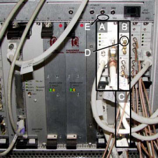

Operating Documentation
Direction 5670006, Rev# 1
Module Version 5.0, Version Date 2/25/11
Operating Documentation |
| ||||
| FATAL ELECTRIC SHOCK HAZARD! | ||||
| there is Dangerous voltage throughout the rf cabinet. | ||||
| TO PREVENT FATAL ELECTRIC SHOCK, Lock-out/Tag-out THE PDU BEFORE PERFORMing THE FOLLOWING PROCEDURE. |
| ||||
| Lifting Hazard! | ||||
| The CPC Amplifier is heavy and will need a significant amount of balancing to remove it from the RF Accessories Cabinet. | ||||
| To avoid injury, two (2) individuals are required to perform this procedure. |
| Condition | Reference | Effectivity |
|---|---|---|
For Upgrade systems containing the SSM: Install filters to each one of the Sub-D Connectors at the output of the SSM. Filters and instructions (5120685INS) for filter installation are included in the Kit 5115463. | - | - |
Connections to the System Support Module (SSM): J507, Spectro Bias, Spectro A and B remain the same.
The RF input to the MNS Amplifier Cabinet no longer comes from the SSM. The RF input to the MNS Amplifier Cabinet will be provided via J52 on the Systems Cabinet. J52 is the output from the MUX Board labeled SLAVE EXCITER OUT. If the BNC Connector for J52 is missing, the cable should be in a bag in the systems cabinet.
(For Upgrades Only) Install the SSM filter kit FMI if available. These filters are placed in-line on all the D-Sub type connections on the rear of the SSM. MNS SNR may improve when installed.
The MNS system will be calibrated to 1.58 kW (62 dBm) using the adjustable gain potentiometer on the rear of the amplifier. Only the new CPC Amplifier is rated to 2 kW.
The MNS receive chain has changed. There is no longer a dedicated MNS receive line to the systems cabinet. The MNS receive path runs from the RX connector on the LPCA cover, through the cable tray and to J23 on the 16-channel switch.
The previous dedicated MNS receive cabling to the pen panel, 20 dB gain block, and cabling to the systems cabinet may be removed from the system.
The MNS TX path starts at the MNS Amplifier RF-Out, and will pass through the PEN Panel to the Rear Pedestal. At the Rear Pedestal, the TX line connects to the cable that runs through the cable tray and is attached directly to the LPCA cover. (Refer to LPCA Replacements Step for LPCA cable routing.) Verify -14.5 VDC (Receive) or 5 VDC (Transmit) on the TX line for proper connection.
The TX and RX connections for MNS are new for Excite. TR switch cables plug into these connectors.
A TX Patch Cable is provided to run between the TX port on the LPCA cover and the TX port on the Legacy TR Switch. This cable is not tuned and may be used for all TR switches.
(For Legacy 31P TR Switch Only) An RX Patch Cable is provided. A filter designed for 31P is included in the legacy patch cable. This filter is not compatible with other MNS frequencies. Contact the General Electric Spectroscopy Team to obtain RX patch cables for use with legacy TR switches for other frequencies. A 20% loss in SNR will be observed when running MNS without this filter on the legacy RX patch cable.
Install the rails into the RF Cabinet using the provided hardware. The lower rails should be installed approximately 4 inches or 10 cm above the RF Amplifier. The upper rails should be installed approximately 11 inches or 28 cm above the bottom rails.
Install the eight (8) retaining clips onto the rails in the RF cabinet. The retaining clips will secure the amplifier to the cabinet.
Install the Universal Hoist onto the RF Cabinet.
Install the CPC Amplifier onto the Hoist.
Install the CPC Amplifier into the cabinet as shown in Illustration 1. One FE must operate the hoist, while the other FE balances the amplifier.
Click here to access the 1.5T and 3.0T LPCA Upgrade Instructions for the MNS Option.
| NOTE: | MNS T/R Module should be removed from System when Spectroscopy Scanning is completed. The presence of the module may cause IQ degradation. |
Slide the MNS TR Switch onto the two brackets on the top of the LPCA as shown below.
Attach the cables of the MNS TR switch of the LPCA MNS ports.
Turn off power to the Systems Cabinet.
Remove the cover over Slot 9 and install the Slave Exciter (2373070) as shown below.
Connect the long cable between the Slave Exciter RF-Out and the MUX Board Slave Exciter In ports.
Connect the short cable between the Slave and Master LO In/Out ports.
Connect the cable from the MUX Board Slave Exciter Out to the BNC bulkhead fitting J52 on the rear of the Systems Cabinet.
Remove the two (2) RF Dectector Boards and the Broadband Amplifier I/F Board from their packing material.
At the back of the RFS Cabinet, locate Slots 10 and 13 of the UPM Chassis, and insert one RF Detector Board into each slot as shown.
Locate Slot 6 of the UPM Chassis, and insert the Broadband Amplifier I/F Board into this slot.
Locate the cables labeled Slot 10 J4 and Slot 13 J4. Attach them to their respective connection spots on the two RF Detector Boards and down to IO Panel J102 and J104 connections.
Add the 50-ohm terminators to all empty J numbers on the RF Detector Boards.
Locate Cable P/N 5113183-4, and attach as labeled, BB Amp I/F Board J3, to Driver Module J13.
Locate Cable P/N 5115645, and attach as labeled, BB Amp I/F Board J5, to IO Panel J123.
Remove the two (2) RF Detector Boards and the Broadband Amplifier I/F Board from their packing material.
At the front of the RFS Cabinet, locate Slots 19U and 19L on the CAM Chassis. Insert one RF Detector Board in each slot as shown below.
Locate Slot 17U / 18U on the CAM Chassis, and insert the Broadband Amplifier I/F Board into this slot.
Illustration 8: RF Detector and BB Amplifier I/F Board in CAM Chassis

| A | BB Amplifier IF Board - Slot 17U and 18U |
| B | BB UPM RF Detector Board 19U |
| C | BB UPM RF Detector Board 19L |
| D | 50-ohm Terminators |
| E | Slot Identification Numbers |
Locate the cables labeled CAM Slot 19U-J4 and CAM Slot 19L-J4. Attach them to their respective connection spots on the two RF Detector Boards and down to IO Panel J102 and J104 connections.
Add the 50-ohm terminators to all empty J numbers on the RF Detector Boards.
Locate Cable P/N 5113183-4 and attach as labeled, BB Amp I/F Board J3, to Driver Module J13.
Locate Cable P/N 5115645 for 2 kW Amplifier or P/N 5115644 for 4 kW Amplifier. Attach as labeled, BB Amp I/F Board J5, to IO Panel J123. Refer to the two tables below for all cable connections.
Refer to the illustration below for the interconnects.
Install the following:
Transmit Cable Run 1147 from the Rear Pedestal to PEN Panel J83. (Refer to the appropriate Signa Installation manual for details on terminating RF Cables.)
Transmit Cable Run 1146 from MNS Amplifier RF-Out to PEN Panel J83.
Data Cable between MNS Amplifier J7 and SSM J507.
BNC Cable between MNS Amplifer J1 and SSM J101.
BNC Cable between MNS Amplifier J9 and the RF Systems Cabinet Driver Module J8.
AC Power Cable between MNS Amplifer J8 and the PDU Terminals 13, 14, and GND.
BNC Cable between MNS Amplifier J12 and SSM J102.
Cable Run 1058 from MNS Amplifer J3 to RF Systems Cabinet MR2-A11-J52.
Refer to the illustration below for interconnects.
Install the following:
Transmit Cable Run 1147 from the Rear Pedestal to PEN Panel J83. (Refer to the appropriate Signa Installation manual for details on terminating RF Cables.)
Transmit Cable Run 1146 from MNS Amplifer RF-Out to PEN Panel J83.
Data Cable between MNS Amplifer J7 and RF Systems Cabinet J123.
BNC Cable between MNS Amplifer J1 and RF Systems Cabinet J102.
BNC Cable between MNS Amplifer J9 and the RF Systems Cabinet Driver Module J8.
C Power Cable between MNS Amplifier J8 and the PDU Terminals 13, 14, and GND.
BNC Cable between MNS Amplifier J12 and RF Systems Cabinet J104.
Cable Run 1058 from MNS Amplifier J3 to RF Systems Cabinet MR2-A11-J52.
Refer to the Cable Map below for the 2 KW MNS Option additional system interconnects.
Install the following:
Transmit Cable Run 1147 from Rear Pedestal to PEN Panel J83. (Refer to appropriate Signa Installation manual for details on terminating RF Cables.)
Transmit Cable Run 1146 from MNS Amplifier RF-Out (use Extension Cable 1248 if necessary) to PEN Panel J83.
Data Cable 1227 between MNS Amplifier J7 and RF Systems Cabinet J123.
BNC Cable 1222 between MNS Amplifier J1 and RF Systems Cabinet J102.
BNC Cable 1224 between MNS Amplifier J9 and the RF Systems Cabinet Driver Module J8.
AC Power Cable 1237 between MNS Amplifier J8 and the PDU Terminals 13, 14, and GND.
BNC Cable 1223 between MNS Amplifier J12 and RF Systems Cabinet J104.
Cable Run 1221 from MNS Amplifier J3 to RF Systems Cabinet MR2-A11-J52.
Go to the Service Desktop and start the Service Browser if not already running.
Start the System Config File Manager as shown below.
When the MRconfig Editor displays, click on he MRconfig tab.
Set Spectroscopy RF Amplifier and Broadband Transceiver to Yes.
Press the [Save Changes] button, then [Quit].
Load the following options:
MNS Option Key
SAGE7
PROBE 3D BRAIN
PROBE2000
Shutdown and restart the system.
Perform the procedure 2KW, 4KW and 8KW MNS Amplifier Calibration.
Remove any extra hardware or tools used during the installation.